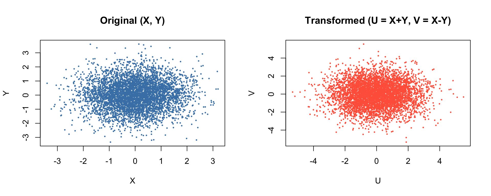

Code
set.seed(1234)
n <- 5000
X <- rnorm(n)
Y <- rnorm(n)
U <- X + Y
V <- X - Y
par(mfrow = c(1, 2))
plot(X, Y, pch = 16, cex = 0.4, col = "steelblue",
main = "Original (X, Y)",
xlab = "X", ylab = "Y")
plot(U, V, pch = 16, cex = 0.4, col = "tomato",
main = "Transformed (U = X+Y, V = X-Y)",
xlab = "U", ylab = "V")